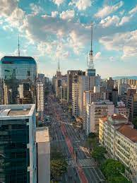

O que eu mais gosto em São Paulo
Passear na avenida paulista
Um dos principais centros financeiros da cidade, a avenida paulista também possui diversas opções de entretenimento. Endereço do Museu de Arte de São Paulo, MASP, do Teatro Gazeta e muitos outros, a região é de fácil acesso graças as diversas linhas de ônibus que cruzam a avenida e a linha de metrô que passa por baixo dela.
A avenida Paulista sempre é assunto. O que será que estão falando a respeito no TwitterO parque da Ibirapuera

Um dos cartões postais da cidade, o parque dispõe de mais de 1,5 Km{^2} de área verde, lagos artificiais e pistas de cooper e ciclismo. E se isso não fosse o suficiente, o parque costuma ser palco de diversos eventos culturais ao longo do ano.
Veja no mapa como chegar ao parque.